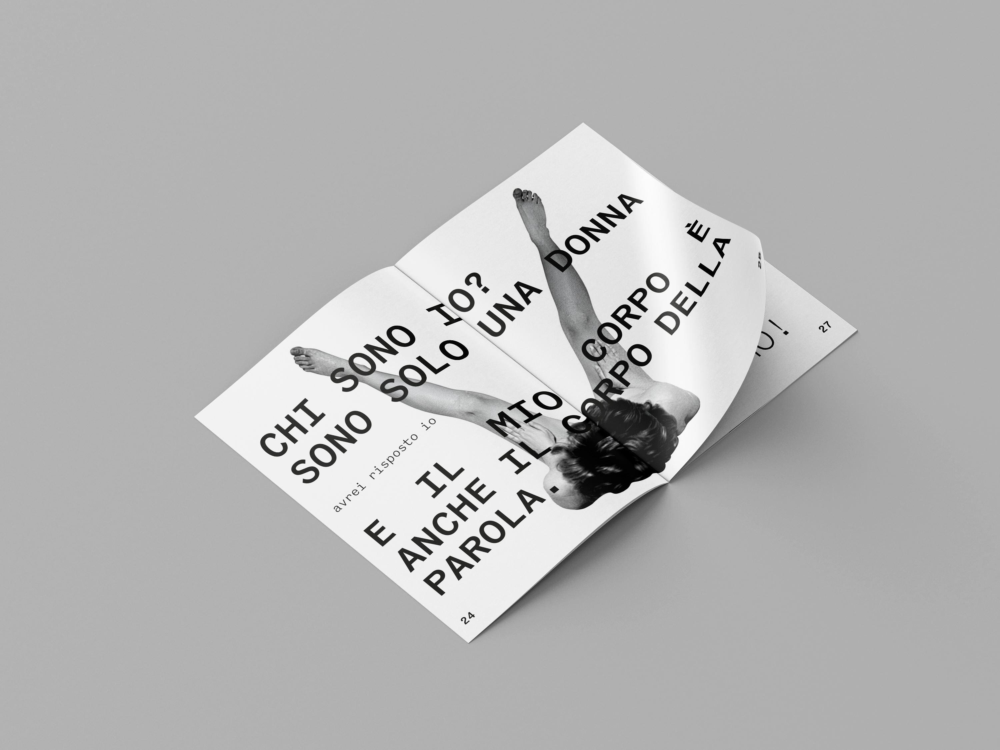
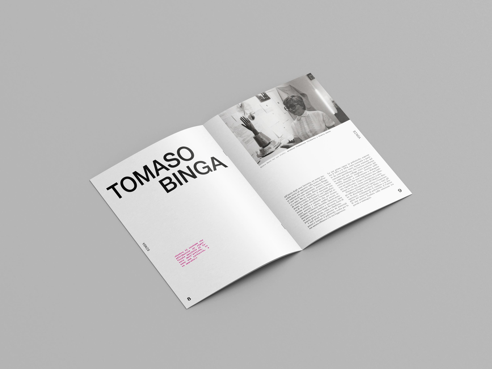
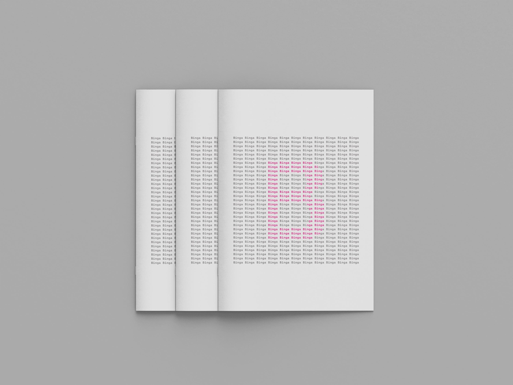
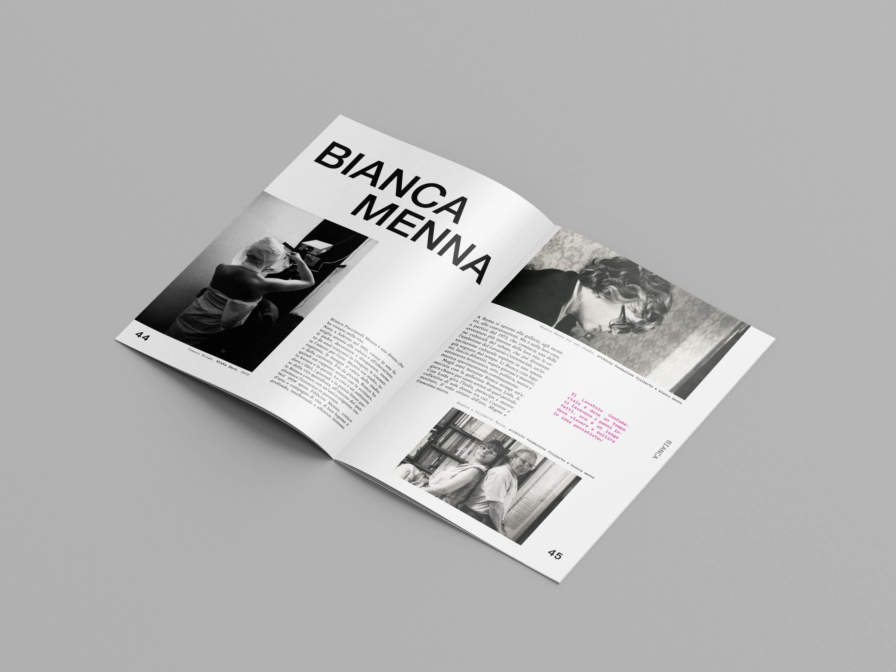

BINGA
Il progetto, intitolato Binga, consiste nella realizzazione di un book che racconta la vita dell'artista Bianca Menna, in arte Tomaso Binga.
Il progetto racconta la dualità tra la sua vita privata e quella d'artista. Con il suo nome d'arte al maschile, Binga racconta tramite le sue opere e il suo spirito provocante e ironico com'è cercare di farsi spazio in una società in cui l'uomo prevale sempre.
L'impaginato si divide in due sezioni tra loro capovolte, da un lato Binga dall'altro Menna. In mezzo a dividere le sezioni si trova l'intervista fatta all'artista.



